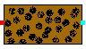

CarbonBed Module (Carbon Bed)
A process engineering (0D) model
is used to simulate mercury removal from the syngas
within the cold gas clean up stream. The use of carbon beds to remove mercury
from syngas has been demonstrated at the Eastman
Chemical plant in
Activated carbon, which can have internal surface area of the order of 106 m2/kg (Coulson et al, 1991), is effective in removing
mercury from syngas streams. Calgon
Carbon Corporation of
Design calculations of a fixed bed adsorber can be readily made from feed and product gas specifications, equilibrium data, and knowledge of the bed saturation at the beak point under the desired operating conditions. A theoretical basis for design of fixed bed adsorbers is given by Brown et al., (1955), McCabe et al., (1985) and Coulson et al., (1991). However, for adsorption with chemical reaction, the interrelation of these variables is so complex that methods of design usually rely heavily on experimental and operating data of existing plants. The purpose of an adsorber design is to determine the dimensions of the vessel and the quantity of activated carbon required to achieve a specified mercury removal rate. In the simplest of the design approach, the following steps are followed:
· Determination of allowable pressure drop
· Determination of the minimum fluidization velocity
· Determination of allowable superficial velocity through the bed
· Specification of residence time
· Determination of adsorber dimensions
· Calculation of quantity of carbon needed
· Specification of mercury content of coal
· Specify adsorbent lifetime
· Calculate mercury loading of the carbon bed
Connections
- Outlet Port 0 : Outlet gas stream.
Graphical User Interface (UI)
 The
UI window prompts the user for the desired properties of the Carbon and
operation parameters. Module calculations are governed by these parameters, as
well as by the properties of the input gas stream.
The
UI window prompts the user for the desired properties of the Carbon and
operation parameters. Module calculations are governed by these parameters, as
well as by the properties of the input gas stream.
Summary Data (SUM)
|
After the module has executed, the Summary Data button provides summary information. The module outputs calculated absorber diameter (m), bed height (m), mercury leaving the adsorber (lbm/hr), minimum fluid velocity (m/sec), number of adsorbers, pressure drop per meter (Pa/m), superficial velocity (m/sec), and pressure drop across the bed (psi). |
References
1. Kohl,
Arthur L., and Nielsen, Richard B., “Gas Purification.” Fifth Edition, Gulf Publishing Company,
2. Keating, M.H., et al. Mercury Study Report to Congress, Volume I: Executive Summary, EPA-452/R-97-003, December 1997.
3. Korens, Nick, and Simbeck, Dale R., and Wilhelm, Donald J., “Process Screening Analysis of Alternative Gas Treating and Sulfur Removal for Gasification.” Prepared for U.S.D.O.E./N.E.T.L. Task Order No. 739656-00100. December 2002.
4.
Ratafia-Brown, Jay,
and Manfredo, Lynn, and Hoffman, Jeffrey, and Ramezan, Massood, “Major
Environmental Aspects of Gasification-Based Power Generation
Technologies.” Prepared for : U.S.D.O.E/N.E.T.L. Gasification Technologies
Program. December 2002.